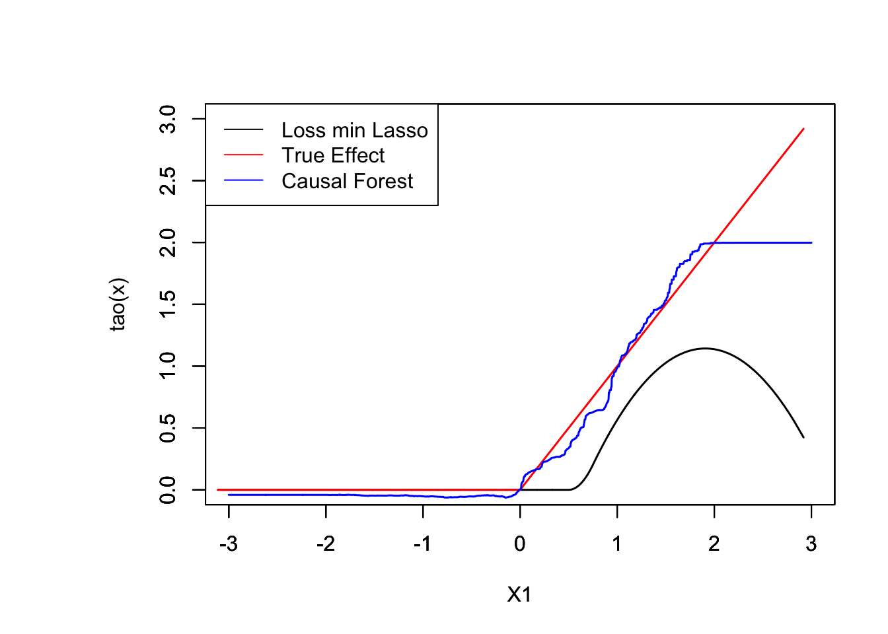

5.2 Aggregated Estimator
As we saw in Section 1, aggregated estimator can be used in when we know what exact variables are determining the treatment assignment. We will consider the discrete case, when a discrete covariate determines the probability of treatment for simplicity. Note that students who received B on their first exam are more likely to attend the tutoring session in our simple example. So grade in the first exam (A or B for simplicity) determines the treatment here.
Setup. \(Y_i\) is the outcome variable; final exam score. \(W_i\) is the treatment variable; whether a student attended the tutoring session. \(X_i\) is the covariate; a student’s grade on the first exam. We want to evaluate the effects of attending a tutoring program on a student’s exam score.
What we would want to do is to condition on the first exam’s grade, estimate the treatment effects, and aggregate it.
The aggregated estimator is given as:
\[\begin{align} \hat{\tau}_{AGG} = \frac{n_{A}}{n} \bigg[\frac{1}{n_{A1}} \underbrace{\sum}_{\substack{i \in A \\ \textrm{W = 1}}} Y_i - \frac{1}{n_{A0}} \underbrace{\sum}_{\substack{i \in A \\ \textrm{W = 0}}} Y_i \bigg] + \frac{n_{B}}{n} \bigg[\frac{1}{n_{B1}} \underbrace{\sum}_{\substack{i \in B \\ \textrm{W = 1}}} Y_i - \frac{1}{n_{B0}} \underbrace{\sum}_{\substack{i \in B \\ \textrm{W = 0}}} Y_i \bigg] \tag{5.4} \end{align}\]
Note that the first block is the treatment effect for those who received A on their first exam, whereas the second block represents treatment effect for those who received B. After a few steps of simple algebra, equation @ref{eq:AGG0} can be written as:
\[\begin{equation} = \frac{1}{n} \bigg[ \frac{1}{\frac{n_{A1}}{n_{A}}} \underbrace{\sum}_{\substack{i \in A}} Y_i \times W_i - \frac{1}{\frac{n_{A0}}{n_{A}}} \underbrace{\sum}_{\substack{i \in A}} Y_i \times (1 - W_i) \bigg] + \\ \frac{1}{n} \bigg[ \frac{1}{\frac{n_{B1}}{n_{B}}} \underbrace{\sum}_{\substack{i \in B}} Y_i \times W_i - \frac{1}{\frac{n_{B0}}{n_{B}}} \underbrace{\sum}_{\substack{i \in B}} Y_i \times (1 - W_i) \bigg] \tag{5.5} \end{equation}\]
Equation (5.5) looks super complicated, buts its not. Let’s breakdown the components of it:
\(\frac{n_{A1}}{n_A}:\) Represents the fraction of treated individuals who received \(A\) on the first exam.
\(\frac{n_{A0}}{n_A}:\) Represents the fraction of untreated individuals who received \(A\) on the first exam.
\(\frac{n_{B1}}{n_B}:\) Represents the fraction of treated individuals who received \(B\) on the first exam.
\(\frac{n_{B0}}{n_B}:\) Represents the fraction of untreated individuals who received \(B\) on the first exam.
Note that \(\frac{n_{A1}}{n_A} = e(X = A)\) and \(\frac{n_{A0}}{n_A} = 1 - e(X = A)\) and the same goes with the segment composed of those who received B on their first exam.
Equation (5.5) can be further simplified as:
\[\begin{equation} \hat{\tau}_{AGG} = \frac{1}{n}\bigg[ \sum \frac{Y_i \times W_i}{e(X)} - \sum \frac{Y_i \times (1-W_i)}{1 - e(X)} \bigg] \tag{5.6} \end{equation}\]
Equation @ref{eq:AGG2} takes the form of an inverse probability-weighted estimator. We’ll find out that Aggregate Estimator \((\hat{\tau}_{AGG})\) is a special case of Inverse Probability Weighting later on in this section.
n <- 2000
p <- 10
true_effect <- 10
set.seed <- 12570
agg.means <- replicate(1000, {
X <- matrix(rnorm(n * p), n, p)
X.test <- matrix(0, 101, p)
X.test[, 1] <- seq(-2, 2, length.out = 101)
prob <- 1 / (1 + exp(- (X[, 1] < 1 + rnorm(n))))
W <- rbinom(n, 1, prob)
Y <- 60 + true_effect * W + 5 * pmax(X[, 1], 1) + rnorm(n)
group <- ifelse( X[, 1] < 1, "A", "B" )
# estimates for those receiving A and B on the first exam
att.A <- mean(Y[group == "A" & W == 1]) - mean(Y[group == "A" & W == 0])
att.B <- mean(Y[group == "B" & W == 1]) - mean(Y[group == "B" & W == 0])
prop.A <- mean(group == "A")
prop.B <- mean(group == "B")
prop.A * att.A + prop.B * att.B
}
)
# plot(X[, 1], X[, 2], col = as.factor(W))
hist(agg.means, freq = F, main = "", col= rgb(0, 0, 1, 1/8), xlab = "ATT estimates", las = 1)
abline(v = true_effect, lwd = 3, lty = 2)
legend("topright", "True effect", lwd = 3, lty = 2, bty = "n")
## [1] "mean of AGG estimates: 9.959"## [1] "standard error of AGG estimates: 0.063"Let’s compare this to a naive estimator.
set.seed <- 12570
naive.means <- replicate(1000, {
X <- matrix(rnorm(n * p), n, p)
X.test <- matrix(0, 101, p)
X.test[, 1] <- seq(-2, 2, length.out = 101)
prob <- 1 / (1 + exp(- (X[, 1] < 1 + rnorm(n))))
W <- rbinom(n, 1, prob)
Y <- 60 + true_effect * W + 5 * pmax(X[, 1], 1) + rnorm(n)
# naive estimates that does not take voluntary selection into account
mean(Y[ W == 1]) - mean(Y[ W == 0])
}
)
# plot(X[, 1], X[, 2], col = as.factor(W))
hist(naive.means, freq = F, main = "", col= rgb(0, 0, 1, 1/8), xlab = "ATT naive estimates", las = 1)
abline(v = true_effect, lwd = 3, lty = 2)
legend("topright", "True effect", lwd = 3, lty = 2, bty = "n")
## [1] "mean of naive estimates: 9.762"## [1] "standard error of naive estimates: 0.083"